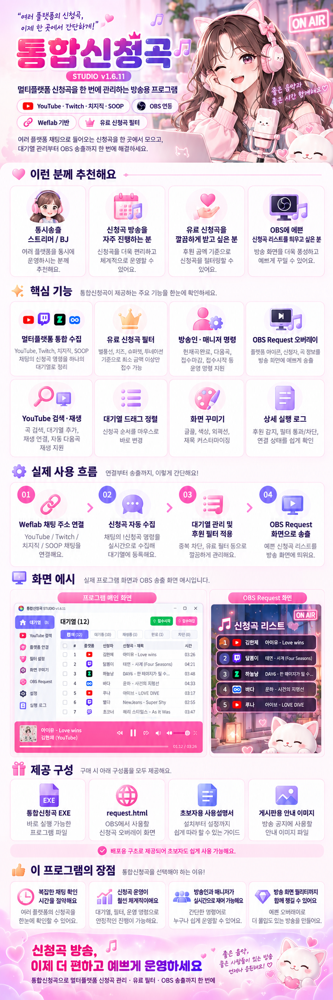

🗂️
통합 대기열
플랫폼·신청자·곡명·후원금액을 관리하고, 신청곡 순서를 드래그로 변경합니다.
여러 플랫폼에서 들어오는 신청곡을 한 곳에서 정리하고, 대기열과 OBS 방송 화면을 연결하는 통합신청곡 Studio.
다운로드 안내 ↗주요 기능 →Windows 설치 파일은 현재 검증·배포 준비 중입니다.
기능 설명용 UI 예시 · 실제 실행 화면과 다를 수 있습니다
v1.6.11 기능과 사용 흐름을 정리한 상세 소개 이미지입니다.

플랫폼·신청자·곡명·후원금액을 관리하고, 신청곡 순서를 드래그로 변경합니다.
가수·제목을 검색하고 대기열에 추가합니다. 재생 여부는 YouTube 조건에 영향을 받습니다.
방송 화면에 대기열을 표시하고 디자인·글꼴·색상을 조절합니다.
Weflab·Toonation 기반의 신청곡 수집을 지원합니다. 환경별 제한이 있을 수 있습니다.
접수 ON/OFF, 단축키, 중복곡 제한, 라이트·다크 모드, 로그를 지원합니다.
판매용 정품 인증 기능. 설치 파일과 이용 방법은 정식 배포 시 안내합니다.
현재 개발 버전 v1.6.11
Windows 설치형 EXE의 빌드·실사용 검증 후 GitHub Releases에서 제공합니다.
※ 자동 업데이트 기능은 v1.6.11에 아직 포함되어 있지 않습니다.